Welcome!
Employee turnover is an important aspect that all businesses must attend to. It's continued success depends heavily on the ability to retain employees and establish a healthy working enviroment.
But how can companies identify who is at risk of leaving and who isn't? It can prove to be a quite harrowing task to make these predictions as there can be so many factors that affects an employee's decision
OUR MISSION
We want to provide with a machine learning model that performs well in identifying and predicting employees who are at risk of leaving a company.
We are showcasing various information and a number of machine learning models that will give insight on employee retention while demonstrating some of the different methods we have learned in the bootcamp.
THE DATA
This database is from a large US company (no name given for privacy reasons). The management department is worried about the relatively high turnover. They want to find ways to reduce the number of employees leaving the company and to better understand the situation, which employees are more likely to leave, and why.
The data The HR department has assembled data on almost 10,000 employees who left the company between 2016-2020. They used information from exit interviews, performance reviews, and employee records.
The data is defined:
- Department - the department the employee belongs to.
- Promoted - If the employee was promoted in the previous 24 months.
- Review - The composite score the employee received in their last evaluation.
- Projects - How many projects the employee is involved in.
- Salary - For confidentiality reasons, salary comes in three tiers: low, medium, high.
- Tenure - How many years the employee has been at the company.
- Satifaction - A measure of employee satisfaction from surveys.
- Bonus - If the employee received a bonus in the previous 24 months.
- Avg_hrs_month - The average hours the employee worked in a month.
- Left - If the employee ended up leaving.
OUR TEAM
We have a dedicated team with memebrs who have complied a number of models and methods that help analyze and understand the data and the models as well.
- Aman | Creation of neural netwrok model.
- David | Creation of the SVM model.
- Dylan | Creation of our Tableau dashboard.
- Everardo | Utilization of SQL and Databricks.
- Julio | Creation of the logistic regression model.
Link to our Dataset!
Kaggle.com
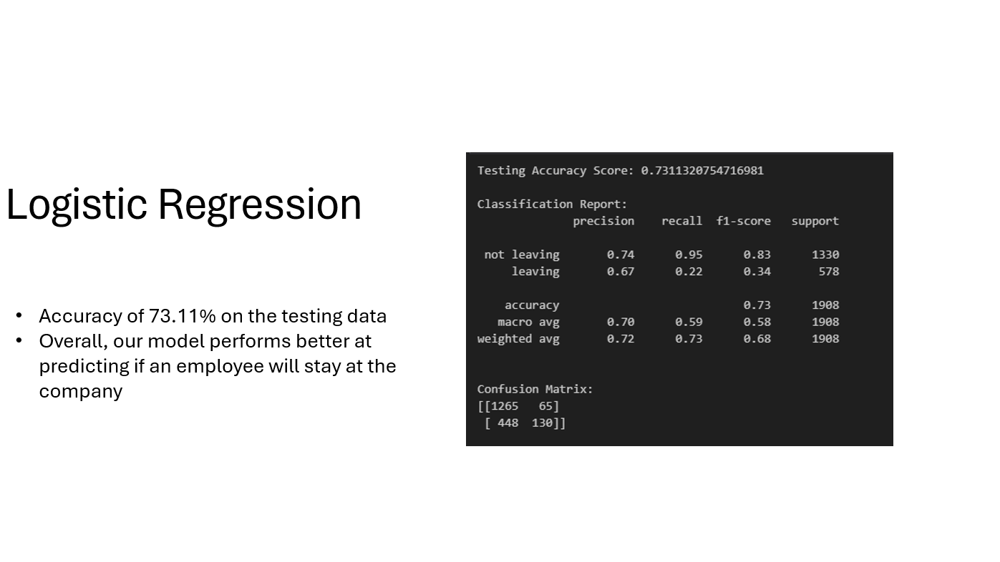
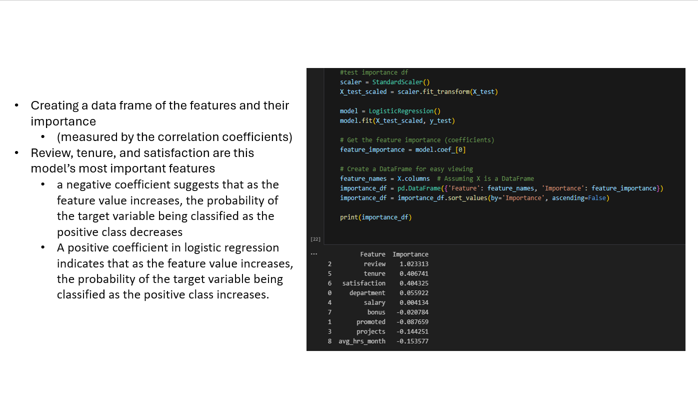
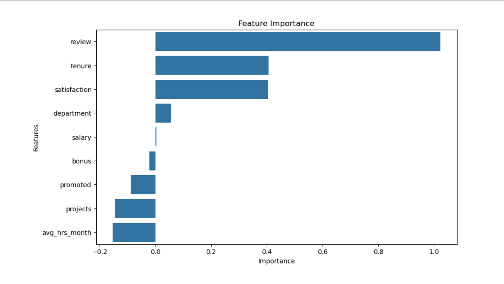
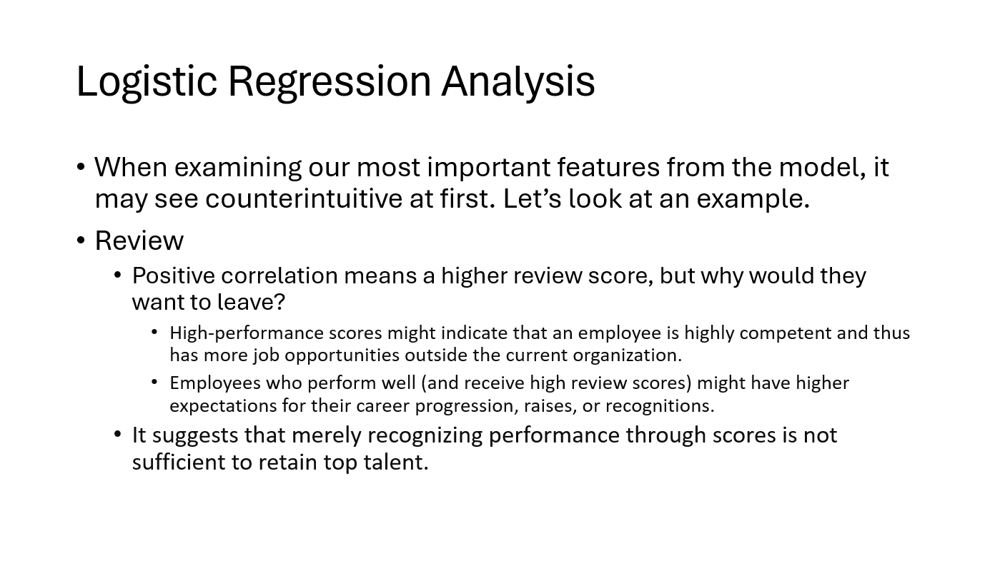
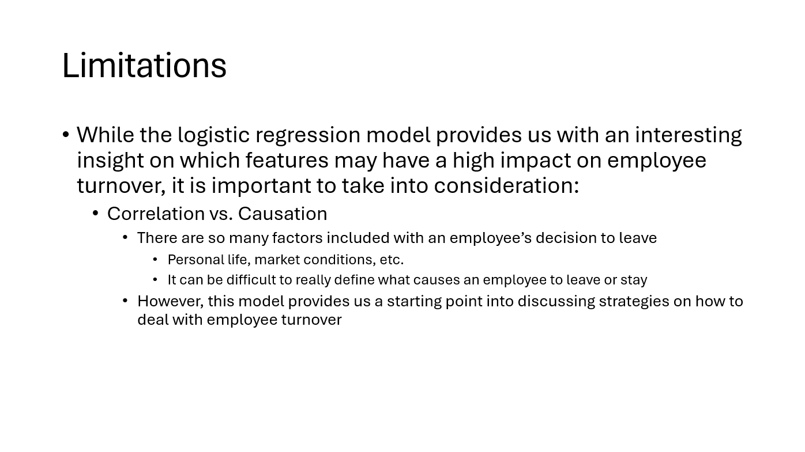
Logistic Regression Analysis Notebook
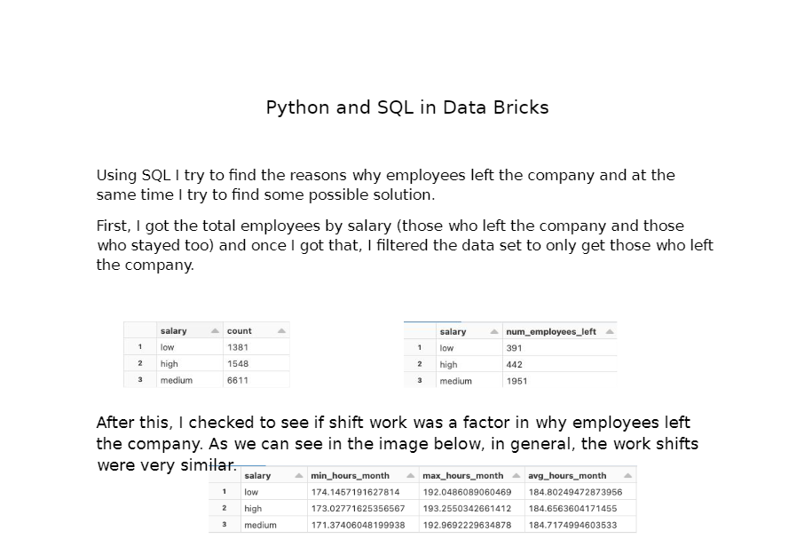
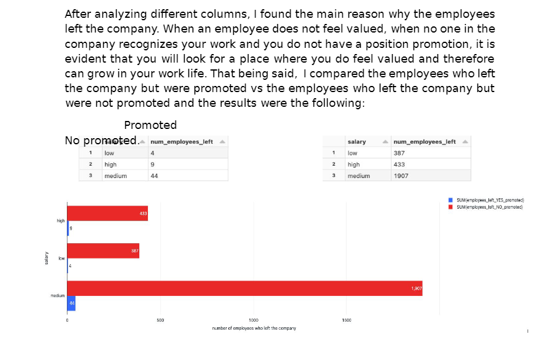
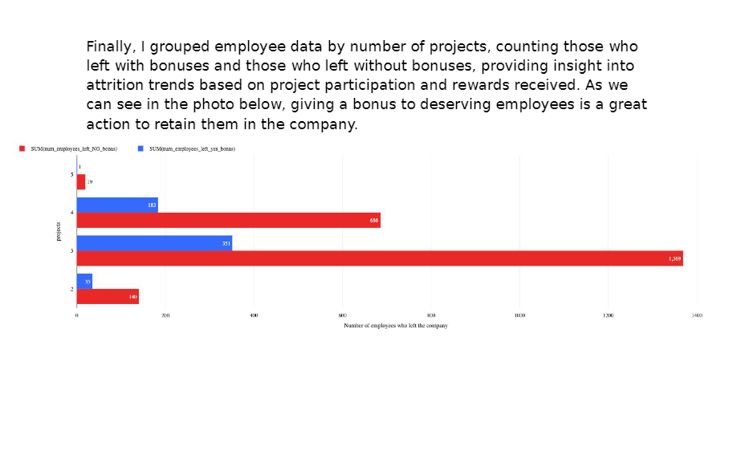
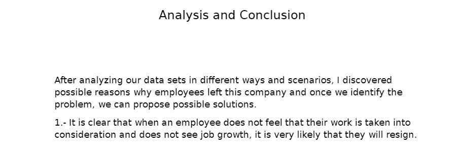
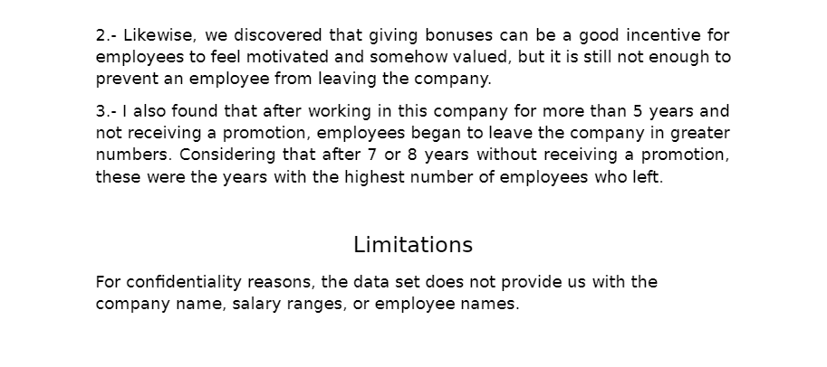
SQL & Databricks Notebook
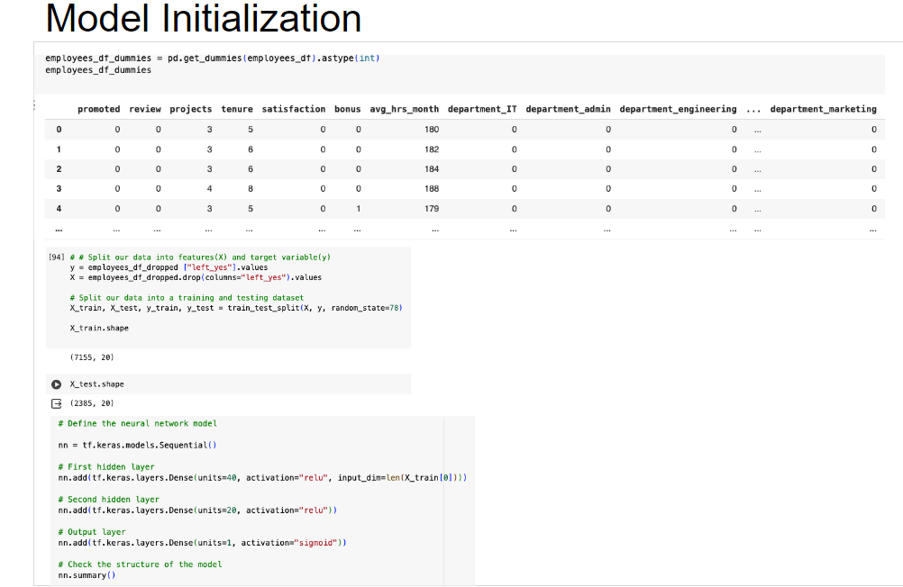
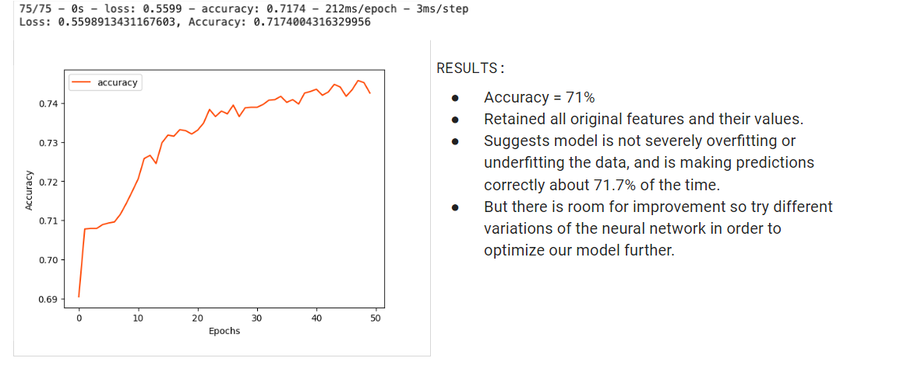
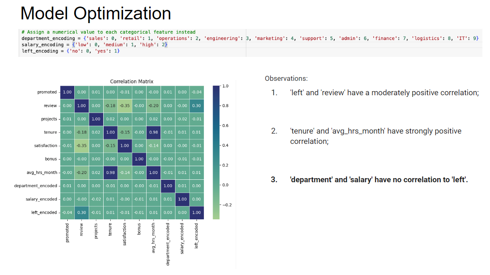
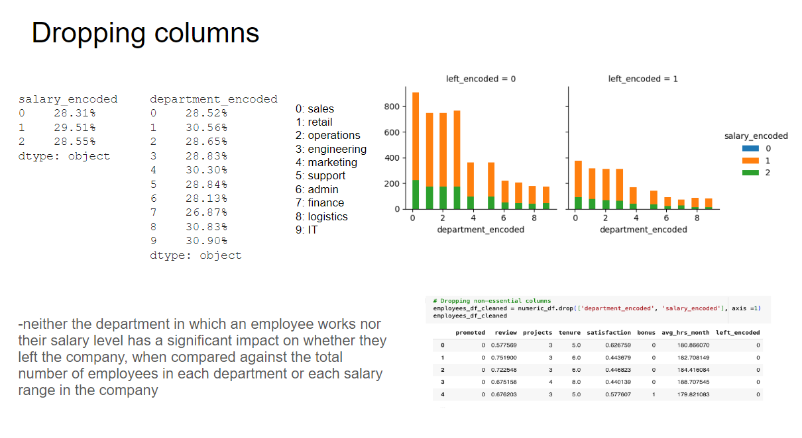
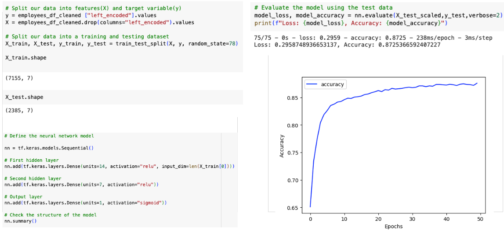
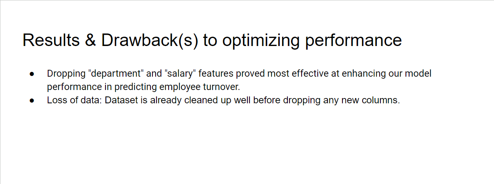
Neural Network Model Notebook
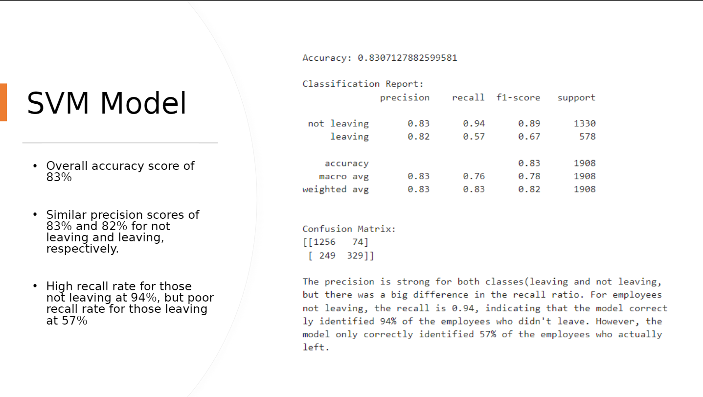
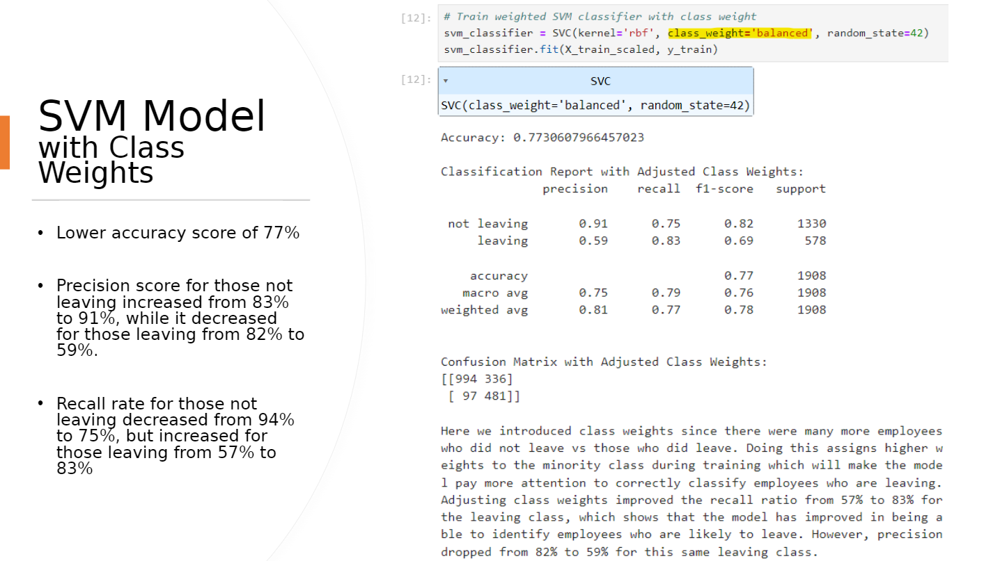
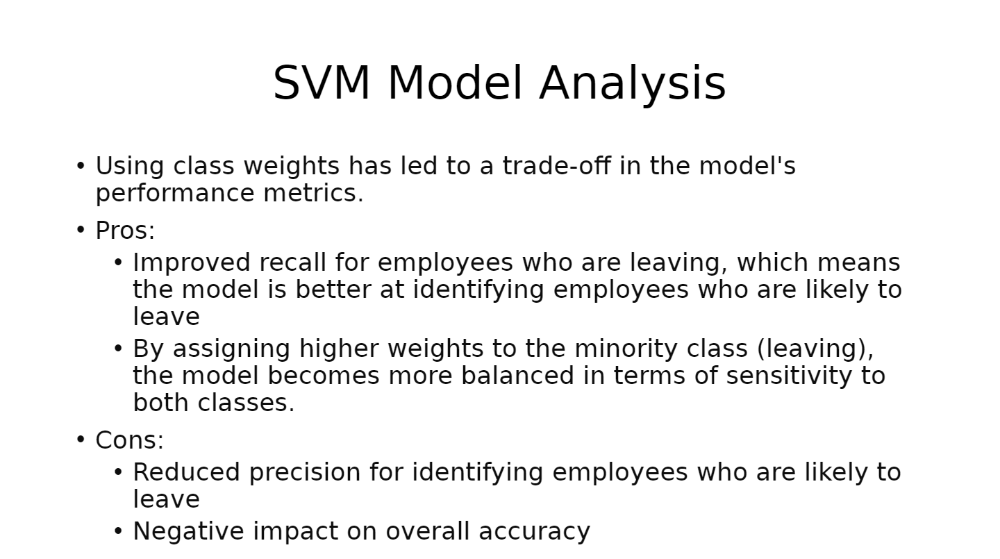
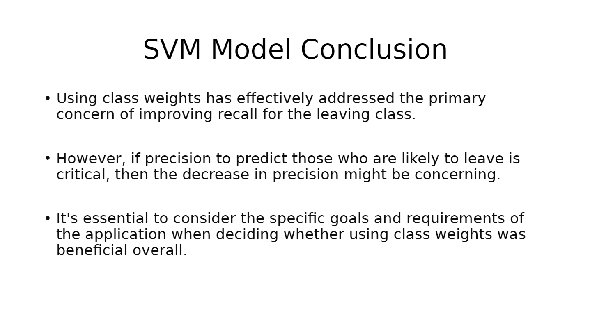
SVM Notebook